Documentation
My goal of week 9 is to understand the code as much as possible. And try to do something with it by typing on my own. To be honest, I have a hard time understanding the code. It's frustrating to see how fast it can be generated, and how slow am I when I try to type on my own. If it's a language learning, I'm like struggling with abc while I can tap a few buttons and generate Shakespeare's sonnet. But abc is good, I'm learning from it. Apologize to be so slow.
Simplify it with the help of LLM
I simplifies the code by using large language model assistance. And to reach a clearer understanding of how it moves, I asked the LLM to change the representation of birds from spots to triangles.
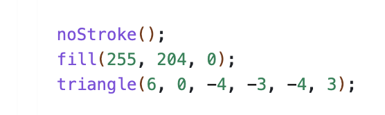
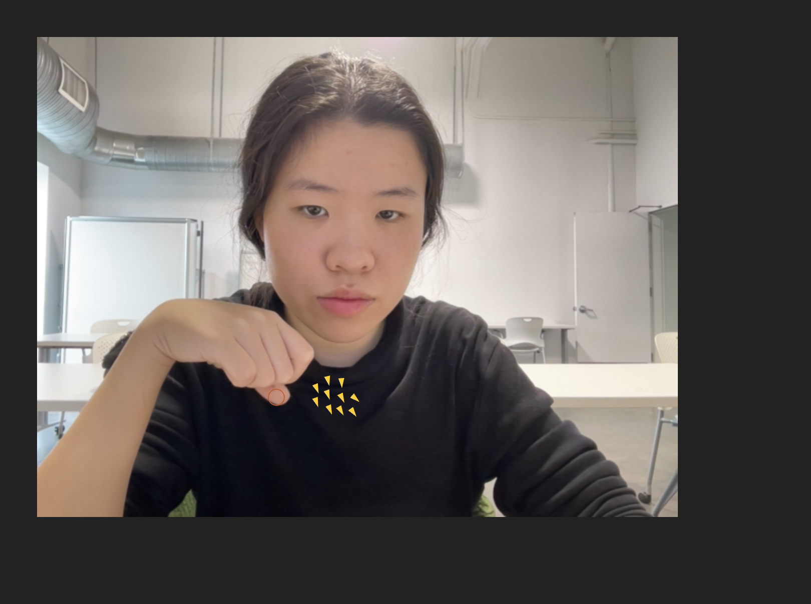
Change the representation of handtracking
The red ring is hard to see, so I change the circus appearance that represent where the hsands/fingers are.
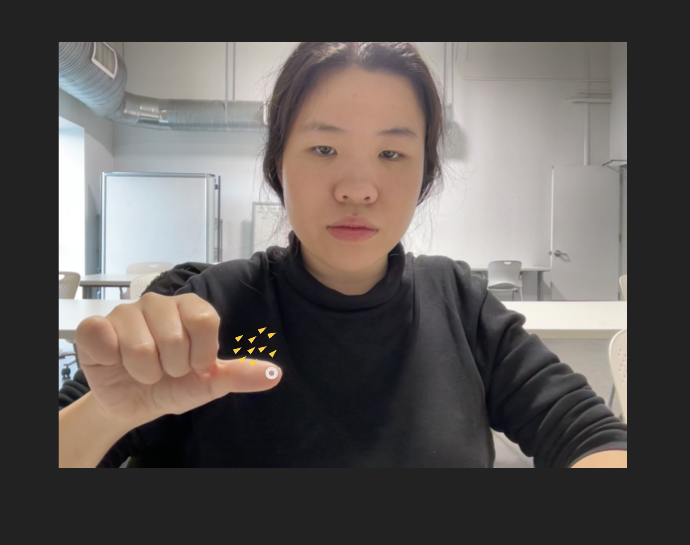
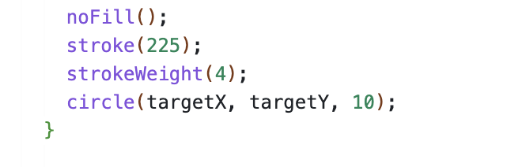
Change the tracking finger
Look for the ml5.js reference and change the number to [8] for the index finger tip.
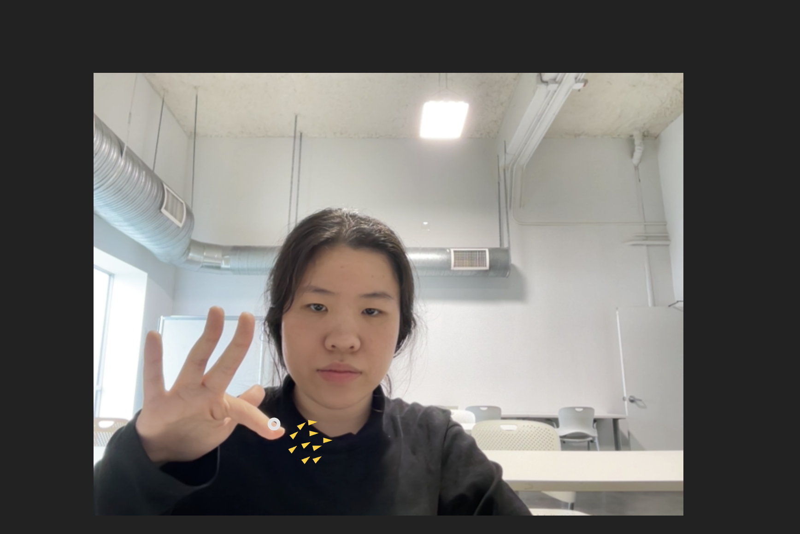
Add a Slider
For the better representation, I decide to add sliders to see what parameter leads to the best results. I didn't understand how it works when claude just bring out all the sliders. So I have it taught me how to add just one, the count slider.
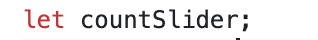
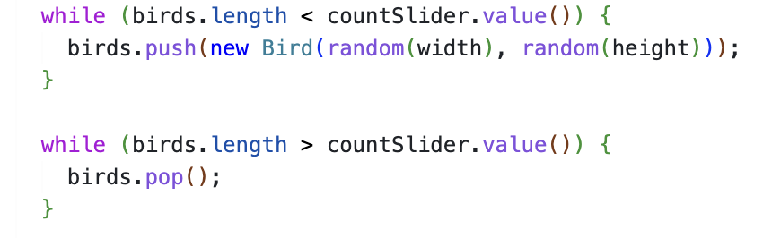
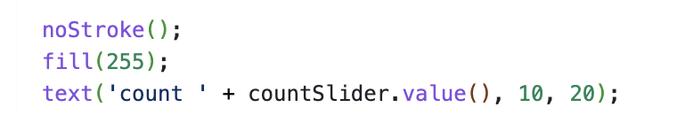
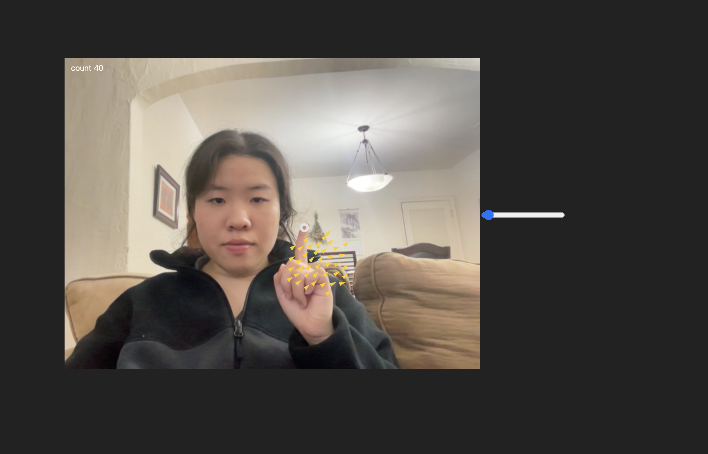
Add another Slider
I add another slider to control the seek parameter(WIll the flock dash to one's hand), to see if I understand it.
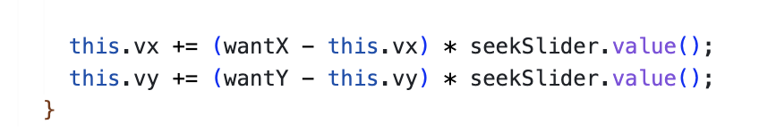
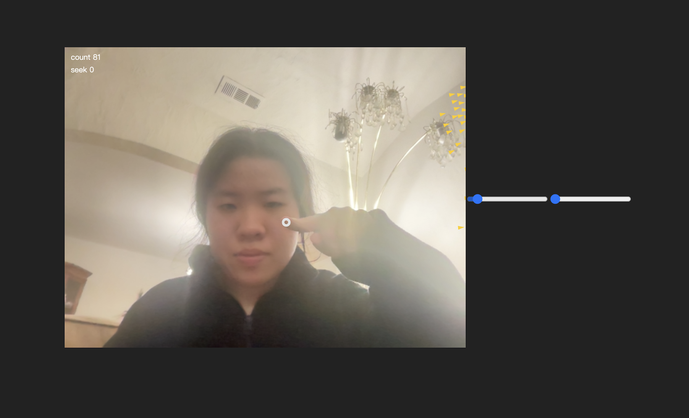